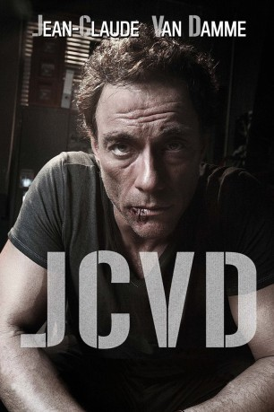

#3446 JCVD
 
 IMDB-Wertung: 7.2 / 10
IMDB-Wertung: 7.2 / 10  Metascore: 0
Metascore: 0 
Jean-Claude Van Damme hat die Faxen dicke. Gerade hat er in den Staaten den Sorgerechtsstreit um seine Tochter verloren, die in der Schule wegen ihres Dads gehänselt wird. Zudem befindet seine Ex-Frau, seine Filme würden mehr als genug über seine väterlichen Qualitäten aussagen. Seinen Anwalt muss Jean-Claude natürlich trotzdem fristgerecht entlohnen und so kommt er entnervt und de facto pleite in seiner Heimat Brüssel an. Dort will er eigentlich nur Geld abheben, doch es bleibt beim Versuch.
Jahr: 2008
Dauer: 96 Minuten
FSK: 16
Land: Belgien Studio: Koch MediaTonspuren:
Untertitel: Deutsch,
Auflösung: 1080p (1920x816) Größe: 6666 MB
Genre: Drama, Komödie, Krimi
Regisseur: Mabrouk El Mechri
Drehbuch: Benjamin Brewer
Soundtrack:
Darsteller:
 Jean-Claude Van Damme als JCVD
Jean-Claude Van Damme als JCVD- John Flanders als Avocat ex-Femme
 François Damiens als Bruges
François Damiens als Bruges Zinedine Soualem als Homme au Bonnet
Zinedine Soualem als Homme au Bonnet- Alan Delabie als Policier , uncredited
- Valérie Bodson als Veuve Film Budapest
- Hervé Sogne als Lieutenant Smith
- Rock Chen als Réalisateur asiatique
- Huifang Wang als Traductrice asiatique
- Renata Kamara als Juge Tribunal Los Angeles
- Mourade Zeguendi als Client Vidéo club
- Vincent Lecuyer als Vendeur Vidéo Club
- Jenny De Chez als Taxiwoman JCVD
- Patrick Steltzer als Policier 1
- Bernard Eylenbosch als Technicien Telecom
- Pascal Lefebvre als Képi 2
- Jacky Lambert als Képi 3
- Norbert Rutili als Perthier
- Olivier Bisback als Docteur GIGN - Eric
- Armelle Gysen als Journaliste 1
- Karim Belkhadra als Vigile
- Jean-François Wolff als Trentenaire
- Michel Bouis als Otage Cigarette
- Raphaëlle Lubansu als Otage 1
- Claudio Dos Santos als Otage 2
- Anne Paulicevich als Guichetière
- Hyppolyte Eloy als Fils Guichetière
- Alan Rossett als Leon Bernstein
- Saskia Flanders als Fille JCVD
- Jesse Joe Walsh als Agent JCVD
- Bella Wajnberg als Dame Poste de Police
- Jérôme Varanfrain als Képi Poste de Police
- Caroline Donnely als Journaliste 2
- Eric Boever als Journaliste 3
- Liliane Becker als Mère JCVD
- François Beukelaers als Père JCVD
- François De Brigode als Journaliste Plateau Télé
- Gregory Jones als Détenu
- Paul Rockenbrod als Tobey Wood
- Dean Gregory als Réalisateur Film Tobey Wood
- Alice Hubball als Assistante Tobey Wood
- Steve Preston als Accessoiriste Film JCVD
- Janine Horsburgh als Assistante JCVD
- Isabelle de Hertogh als Manager Magasin de Jouets
- Ingrid Heiderscheidt als Mère Gamin Magasin de Jouets
- Fjoralba Cuni als Serveuse Boite de Nuit
- Kim Hermans als Prisoner in kickboxing outfit , uncredited
- Leslie Woodhall als Prison visitor , uncredited
Datei: X:\2008(G-M)\JCVD (2008, FSK16, 1920x816).mkv seit 08.04.2016
Festplatte: HD 2008(G-Z)-2009(A-F)
 Es gibt insgesamt 73 Filme in der Gruppe '2008(G-M)'
Es gibt insgesamt 73 Filme in der Gruppe '2008(G-M)'